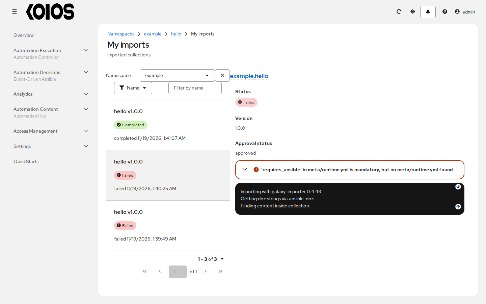

Troubleshooting Automation Content
Follow the collection version through its separate stages: upload, import task, repository membership, approval/distribution and client installation. A successful step does not establish that every later one succeeded.
The missing-runtime-metadata failure, successful import, staging/published separation and final installation in Publish your first collection were validated on the Koios test platform on 2026-11-18. Other diagnostic cases below describe source behavior and configuration checks; they are not claims that each failure was reproduced in that walkthrough.
Import failed
Inspect the complete import result rather than only the last lines printed by ansible-galaxy.
An upload can be accepted before asynchronous validation fails.
In Automation Content > Collection Approvals, use View import logs on the relevant version to open the import view.
In Automation Content > Namespaces, open the namespace and choose Imports to open My imports. This view lists imports and displays their messages and error details; it is not a separate visible sidebar item in the platform navigation. Select the collection and matching import/version as appropriate. Uploading to staging in the platform UI returns to Collection Approvals; use Imports when you need the complete import history.
On an existing collection version, inspect its Import Log view when available. If the failed import never created a usable collection version, use My imports instead of looking only in published collections.
A platform administrator can inspect the import task and hub worker logs when the client/UI message is incomplete. Follow the platform’s explicit context/namespace and diagnostic guidance in Troubleshooting; redact sensitive information before sharing logs.

Missing requires_ansible
The validated first upload failed with:
FileParserError: 'requires_ansible' in meta/runtime.yml is mandatory
Add the file to the collection source:
---
requires_ansible: ">=2.15.0"
Ensure the declared range is appropriate for the collection’s actual content. Rebuild the archive
and check that meta/runtime.yml is included. The normal scaffold alone was not sufficient for
this hub import. If the failed import created no version, retry the corrected archive as in the
tutorial; if a version already exists, follow Version conflicts instead.
In the test, the worker log exposed the parser error even though it was absent from the CLI’s last few output lines. Do not diagnose this case as authentication failure just because the final client message is brief.
Other import failures can come from invalid metadata, missing role READMEs, malformed documentation or dependency information. Fix the reported validation error, rebuild and inspect the next import result rather than bypassing validation.
401 or 403 when publishing or installing
Authentication and authorization are separate checks. Confirm the following:
Server URL: publishing uses
https://<platform>/api/galaxy/; the local approved-content installation URL ishttps://<platform>/api/galaxy/content/published/. Use the gateway address, not a standalone hub token/API configuration from another deployment.Selected configuration:
ANSIBLE_CONFIGpoints at the intended file, itsserver_listincludes the server ID, and the credential environment variable uses that ID in uppercase. The tutorial’s IDkoiosusesANSIBLE_GALAXY_SERVER_KOIOS_PASSWORDorANSIBLE_GALAXY_SERVER_KOIOS_TOKEN.Authentication method: use a platform username/password with gateway Basic authentication enabled, or a valid gateway API token. A hub-issued standalone token does not authenticate through the platform gateway in this setup. Clear stale credentials from the unused method.
Scope and permissions: the account can upload to the namespace and selected destination, or read the published distribution as required. A publisher is not automatically an approver; a reader does not acquire write permissions through a token.
Token/account validity: check expiry, revocation and the token’s read/write scope. A user that signs in only through an external SSO method may need a token instead of a password.
Do not put passwords or tokens into diagnostic commands whose output will be shared. Disabling TLS verification does not fix a missing permission; certificate/hostname errors require trust or networking changes rather than a different hub role.
The version is in staging but cannot be installed
In the tested configuration, import success placed the version in staging. A client using the published distribution could not find it until approval moved it to published.
Check the selected repository in Automation Content > Collections. An authorized reviewer uses
Automation Content > Collection Approvals and Approve collection, then waits for the
operation and verifies destination membership. Inspect task/import errors if the version does not
appear. A 202 API response alone only means the operation was accepted.
Also check the installation URL, requested version, dependencies and local installed collections. Use an empty destination for verification so that an already installed local copy does not hide a server-side availability problem. See the install step.
Version conflicts
Treat namespace/name/version as an immutable release identity. You cannot overwrite an existing version with different content by rebuilding an archive using the same version number. The version-conflict case was not exercised in this walkthrough; it is not a supported way to replace an artifact.
If the version exists, inspect the existing artifact/import and its SHA-256 before retrying. An
existing version with the desired content may need approval or access correction, not another
upload. For changed content, bump version in galaxy.yml, build a new archive and publish that
new version. Do not delete a previously consumed version or change its content as a normal update
procedure.
Namespace does not exist
Create the namespace in Automation Content > Namespaces before publishing. Its name must
match namespace in the archive’s galaxy.yml; renaming the tarball does not change that metadata.
A platform organization or container repository with the same text is not a collection namespace. If the namespace already exists, request appropriate upload access rather than trying to recreate it. A read-only user may be able to see content without permission to create namespaces or upload.
Remote sync fails or has not run
A saved remote is only a configuration resource. Inspect its requirements, URL, upstream credentials and CA settings, the repository’s selected remote, and the task result. Access to a private upstream service is not granted by being a Koios platform user.
Collection synchronization from a remote is not validated in this documentation. See Remotes and repositories before testing it. Do not interpret the earlier validation of gateway organization/team synchronization as a successful community or rh-certified collection sync.
Storage or content download problems
Automation hub stores content on a ReadWriteMany volume by default. When the cluster has no RWX
StorageClass, the documented single-node option is hub.file_storage_access_mode: ReadWriteOnce.
See installation requirements and
Automation hub storage.
Check PVC binding, available capacity and the pod’s access to the content volume. RWO is not a
substitute for a shared volume across arbitrary nodes or a highly available content-store design.
Change storage configuration through supported KoiosPlatform fields and plan data migration or
restore; do not delete content files or PVCs as a quick fix.
If metadata lists the version but artifact download fails, check the distribution’s content path, client reachability/trust of the gateway address, permissions and task/service errors. Preserve both the database and content files in backups.
Container image works in a client but not in a job
Push/pull with podman or skopeo demonstrates client access, not access from the cluster node’s
container runtime. Jobs and rulebook activations need nodes that resolve, reach and trust the
registry hostname, plus the appropriate image pull authentication.
Running controller execution environments or EDA decision environments hosted in the hub registry remains not validated, blocked pending the required public hostname/TLS setup. Keep the container registry limit visible rather than treating collection publish/install validation as image-runtime validation.